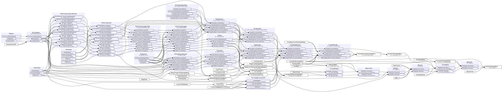

Loki workflow#
A short experimental notebook to illustrate how to set-up and run the reduction workflow for Loki @ ESS.
[1]:
import scipp as sc
import ess.loki.data # noqa: F401
from ess import loki
from ess.sans.types import *
Workflow setup#
[2]:
wf = loki.LokiWorkflow()
# Set detector bank name: in this case there is only one bank
wf[NeXusDetectorName] = "loki_detector_0"
# Wavelength and Q binning parameters
wf[WavelengthBins] = sc.linspace("wavelength", 1.0, 13.0, 201, unit="angstrom")
wf[QBins] = sc.linspace(dim="Q", start=0.01, stop=0.3, num=101, unit="1/angstrom")
# Other parameters
wf[CorrectForGravity] = True
wf[UncertaintyBroadcastMode] = UncertaintyBroadcastMode.upper_bound
wf[ReturnEvents] = False
wf[BeamCenter] = sc.vector([0.0, 0.0, 0.0], unit="m")
wf[DirectBeam] = None
wf[DetectorMasks] = {}
wf[TimeOfFlightLookupTableFilename] = loki.data.loki_tof_lookup_table_no_choppers()
# Use a small dummy file for testing.
# TODO: We currently use the same file for all runs; this should be updated
# once we have files from an actual run.
wf[Filename[SampleRun]] = loki.data.loki_coda_file_one_event()
wf[Filename[EmptyBeamRun]] = loki.data.loki_coda_file_one_event()
wf[Filename[TransmissionRun[SampleRun]]] = loki.data.loki_coda_file_one_event()
# Visualize the workflow
wf.visualize(IntensityQ[SampleRun], graph_attr={'rankdir': 'LR'})
Downloading file 'loki-tof-lookup-table-no-choppers.h5' from 'https://public.esss.dk/groups/scipp/ess/loki/2/loki-tof-lookup-table-no-choppers.h5' to '/home/runner/.cache/ess/loki'.
Downloading file 'loki-coda-one-event.hdf' from 'https://public.esss.dk/groups/scipp/ess/loki/2/loki-coda-one-event.hdf' to '/home/runner/.cache/ess/loki'.
[2]:

Compute \(I(Q)\)#
We compute the IntensityQ for the sample run.
Note: since we are currently using the same file for sample, empty-beam, and transmission runs, the final results are meaningless (NaNs in all Q bins). However, this should not prevent the workflow from running.
[3]:
wf.compute(IntensityQ[SampleRun])
[3]:
scipp.DataArray (3.95 KB)
- Q: 100
- L1()float64m23.600000381469727
Values:
array(23.60000038) - Q(Q [bin-edge])float641/Å0.01, 0.013, ..., 0.297, 0.3
Values:
array([0.01 , 0.0129, 0.0158, 0.0187, 0.0216, 0.0245, 0.0274, 0.0303, 0.0332, 0.0361, 0.039 , 0.0419, 0.0448, 0.0477, 0.0506, 0.0535, 0.0564, 0.0593, 0.0622, 0.0651, 0.068 , 0.0709, 0.0738, 0.0767, 0.0796, 0.0825, 0.0854, 0.0883, 0.0912, 0.0941, 0.097 , 0.0999, 0.1028, 0.1057, 0.1086, 0.1115, 0.1144, 0.1173, 0.1202, 0.1231, 0.126 , 0.1289, 0.1318, 0.1347, 0.1376, 0.1405, 0.1434, 0.1463, 0.1492, 0.1521, 0.155 , 0.1579, 0.1608, 0.1637, 0.1666, 0.1695, 0.1724, 0.1753, 0.1782, 0.1811, 0.184 , 0.1869, 0.1898, 0.1927, 0.1956, 0.1985, 0.2014, 0.2043, 0.2072, 0.2101, 0.213 , 0.2159, 0.2188, 0.2217, 0.2246, 0.2275, 0.2304, 0.2333, 0.2362, 0.2391, 0.242 , 0.2449, 0.2478, 0.2507, 0.2536, 0.2565, 0.2594, 0.2623, 0.2652, 0.2681, 0.271 , 0.2739, 0.2768, 0.2797, 0.2826, 0.2855, 0.2884, 0.2913, 0.2942, 0.2971, 0.3 ]) - incident_beam()vector3m[ 0. 0. 23.60000038]
Values:
array([ 0. , 0. , 23.60000038]) - sample_position()vector3m[0. 0. 0.]
Values:
array([0., 0., 0.]) - source_position()vector3m[ 0. 0. -23.60000038]
Values:
array([ 0. , 0. , -23.60000038]) - wavelength(wavelength [bin-edge])float64Å1.0, 13.0
Values:
array([ 1., 13.])
- (Q)float32𝟙nan, nan, ..., nan, nanσ = nan, nan, ..., nan, nan
Values:
array([nan, nan, nan, nan, nan, nan, nan, nan, nan, nan, nan, nan, nan, nan, nan, nan, nan, nan, nan, nan, nan, nan, nan, nan, nan, nan, nan, nan, nan, nan, nan, nan, nan, nan, nan, nan, nan, nan, nan, nan, nan, nan, nan, nan, nan, nan, nan, nan, nan, nan, nan, nan, nan, nan, nan, nan, nan, nan, nan, nan, nan, nan, nan, nan, nan, nan, nan, nan, nan, nan, nan, nan, nan, nan, nan, nan, nan, nan, nan, nan, nan, nan, nan, nan, nan, nan, nan, nan, nan, nan, nan, nan, nan, nan, nan, nan, nan, nan, nan, nan], dtype=float32)
Variances (σ²):
array([nan, nan, nan, nan, nan, nan, nan, nan, nan, nan, nan, nan, nan, nan, nan, nan, nan, nan, nan, nan, nan, nan, nan, nan, nan, nan, nan, nan, nan, nan, nan, nan, nan, nan, nan, nan, nan, nan, nan, nan, nan, nan, nan, nan, nan, nan, nan, nan, nan, nan, nan, nan, nan, nan, nan, nan, nan, nan, nan, nan, nan, nan, nan, nan, nan, nan, nan, nan, nan, nan, nan, nan, nan, nan, nan, nan, nan, nan, nan, nan, nan, nan, nan, nan, nan, nan, nan, nan, nan, nan, nan, nan, nan, nan, nan, nan, nan, nan, nan, nan], dtype=float32)
Map over detector banks#
Loki has 9 detectors banks, and in principle we would want to run the same workflow on all banks (treating all pixels in the same way).
To compute a reduced result for all banks, we map the workflow over all bank names:
[4]:
import pandas as pd
bank_ids = list(range(9))
bank_names = [f'loki_detector_{i}' for i in bank_ids]
param_table = pd.DataFrame({NeXusDetectorName: bank_names}, index=bank_ids).rename_axis(
index='bank_id'
)
param_table
[4]:
| ess.reduce.nexus.types.NeXusName[scippnexus.nxdata.NXdetector] | |
|---|---|
| bank_id | |
| 0 | loki_detector_0 |
| 1 | loki_detector_1 |
| 2 | loki_detector_2 |
| 3 | loki_detector_3 |
| 4 | loki_detector_4 |
| 5 | loki_detector_5 |
| 6 | loki_detector_6 |
| 7 | loki_detector_7 |
| 8 | loki_detector_8 |
[5]:
mapped = wf.map(param_table)
results = sciline.compute_mapped(mapped, IntensityQ[SampleRun])
# Convert to a DataGroup for better notebook visualization
sc.DataGroup({str(k): v for k, v in results.items()})
[5]:
- 0scippDataArray(Q: 100)float32𝟙nan, nan, ..., nan, nan
- 1scippDataArray(Q: 100)float32𝟙nan, nan, ..., nan, nan
- 2scippDataArray(Q: 100)float32𝟙nan, nan, ..., nan, nan
- 3scippDataArray(Q: 100)float32𝟙nan, nan, ..., nan, nan
- 4scippDataArray(Q: 100)float32𝟙nan, nan, ..., nan, nan
- 5scippDataArray(Q: 100)float32𝟙nan, nan, ..., nan, nan
- 6scippDataArray(Q: 100)float32𝟙nan, nan, ..., nan, nan
- 7scippDataArray(Q: 100)float32𝟙nan, nan, ..., nan, nan
- 8scippDataArray(Q: 100)float32𝟙nan, nan, ..., nan, nan